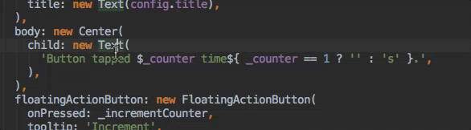

在 IDE 中开发 Flutter
Flutter 插件在 Android Studio 和 IntelliJ IDEs 中提供了完整的开发体验。
安装配置
请您按照编辑器配置 说明来安装 Dart 和 Flutter 插件。
更新插件
对插件的更新会定期发布。 当有可用更新时您会在 IntelliJ 中收到弹窗提示。
手动检查更新：
- macOS 上打开 preferences (IntelliJ IDEA>Check for Updates…, Linux 上 Help>Check for Updates…).
- 如果
dart或flutter被列出, 更新它们。
创建工程
创建一个新的工程
从 Flutter starter app 模板创建一个新的 Flutter IntelliJ 项目：
- 在 IntelliJ 中, 从 ‘Welcome’ 窗口点击 Create New Project 或从 IDE 主窗口点击 File>New>Project… .
- 选择 Flutter 菜单项并点击 Next.
- 输入 Project name 和 Project location.
- 点击 Finish.
通过现有源代码创建新的工程
创建包含已存在 Flutter 源码的新工程：
- 在 IntelliJ 中, 从 ‘Welcome’ 窗口点击 Create New Project 或从 IDE 主窗口点击
File>New>Project… .
- 注意: 不要 使用 New>Project from existing sources… 选项来创建
- 选择 Flutter 选项并点击 Next.
- 在 Project location 项输入,或浏览选择包含 Flutter 源代码文件的目录。
- 点击 Finish.
编辑代码和查看代码问题。
Dart 插件执行代码分析，可以：
- 语法高亮。
- 基于丰富类型分析的代码补全。
- 导航到类型声明 (Navigate>Declaration),查看类型的使用情况 (Edit>Find>Find Usages).
- 查看当前代码所有问题 (View>Tool Windows>Dart Analysis).
任何问题分析都将在Dart分析窗格中显示。:
运行和调试
运行和调试由主工具栏控制：

选择一个target
在 IntelliJ 中打开一个 Flutter 工程，您会在右侧工具栏看到一组特定的按钮。
注意:如果运行和调试按钮被禁用而且没有列出目标设备,那是因为 Flutter 没发现任何连接的 iOS 或Android 设备或模拟器。您需要连接设备或启动模拟器才能继续。
- 找到 Flutter Target Selector 下拉按钮。 这会显示可用设备列表。选择您想运行应用的目标设备。
- 当您连接设备或启动模拟器，会出钱额外的选项。
无断点运行
- 点击工具栏 Play图标，或调用 Run>Run.
- 底部 Run 面板将输出日志：:
- 底部 Run 面板将输出日志：:
断点运行
- 如果需要，可以在源码中设置断点。
- 点击工具栏 Debug 图标或调用 Run>Debug.
- 底部 Debugger 面板会展示栈帧和变量。
- 底部 Console 面板将会输出日志细节。
- 调试基于默认的启动配置。如果要自定义，点击设备选择器右边的下拉按钮并选择 Edit configuration.
快速编辑和刷新开发周期
Flutter 提供了快速的开发周期，通过“热重加载”特性可以让您几乎立即看到您的更改产生的影响。 详情查看 热重载 Flutter 应用程序。
高级调试
调试可视化布局问题
要调试视图问题，通过 ‘Debug’ 启动应用，然后使用 ‘View > Tool Windows > Flutter Inspector’ 打开 Flutter 检查工具窗口。
这里提供了很多调试工具，详情请查看 调试 Flutter 应用程序.
-
‘切换 Select Widget 模式’: 在设备上选择一个控件在 Flutter Inspector 中对其进行检查。
-
‘切换 Debug Paint’: 添加可视化调试提示，以显示边框、填充、对齐和间隔。
-
‘切换 Platform 模式’: 在渲染 Android 或 iOS 之间切换。
-
‘切换 Performance Overlay’: 展示 GPU 和 CPU 线程的性能图表。
-
‘打开 Timeline View’: 分析应用程序运行时的活动。
-
‘打开 Observatory’: 用于 Dart 应用程序的分析器。
附加菜单：
-
‘Show Paint Baselines’: 使每个 RenderBox 展示基线。
-
‘Enable Repaint Rainbow’: 重绘时在图层上显示旋转颜色。
-
‘Enable Slow Animations’: 减慢动画以进行视图检查。
-
‘Hide Slow Mode Banner’: 运行调试版本时隐藏 ‘slow mode’ 横幅。
使用 Observatory 调试
Observatory 是一个额外的基于 html UI 的调试和分析工具，详情查看 Observatory page.
打开 Observatory:
- 调试模式下运行应用。
- 在调试面板选择 ‘open observatory’ (依照如下截图), 点击 Stopwatch (‘打开 Observatory’).
Flutter 源码编辑技巧
辅助 & 快速修正
辅助是与某个代码标识符相关的代码更改。就如黄色灯泡图标展示的， 当光标放在 Flutter 空间标识符上时，有一定数量的辅助可以使用。可以通过点击黄色灯泡或者键盘快捷键 Alt-Enter 来调用辅助：

快速修正也是相似的，只有在一段代码有错误时，它们可以帮您纠正。他们用一个红色灯泡表示。
使用新的控件辅助包裹当前控件
当您有一个控件想要包装在一个控件中时，可以使用它，例如，如果您想要将一个控件包在Row 或 Column中。
使用新的控件辅助包裹控件列表
与上一条相似，只是用在包裹控件列表而不是单个独立控件。
将 child 转换为 children
将 child 参数 改为 children 参数，并将参数值放在一个 list 中。
动态模板
动态模板可以用来加速输入典型的代码结构。通过输入它们的前缀并在代码补全窗口中选择来调用：

Flutter 插件包含以下模板：
- 前缀
stless: 创建一个新的StatelessWidget派生类。 - 前缀
stful: 创建一个新的StatefulWidget的派生类和相关联的 State 派生类。 - 前缀
stanim: 创建一个StatefulWidget派生类和一个与其关联的包含一个使用AnimationController初始化字段的 State 派生类。
通过 Settings > Editor > Live Templates 您也可以定义自定义模板。
IntelliJ 键盘快捷键
热重载
在 Linux (IntelliJ 键盘映射 Default for XWin) 和 Windows 上键盘快捷键是 ctrl-alt-; 和 ctrl-\.
在 MacOS 上 (IntelliJ 键盘映射 Mac OS X 10.5+ copy) 快捷键是 ⌘-⌥-;
and ⌘-\.
在 IntelliJ Preferences/Settings 下可以修改键盘映射：选择 Keymap, 然后在右上角搜索框输入 flutter 。右击您想要修改的绑定并点击 Add Keyboard Shortcut。
’热重载 ‘ vs ‘完全重启’
热重载通过将更新后的代码注入到运行中的 Dart VM（虚拟机）的方式工作。 这不仅包含添加新类还包含向已存在的类中添加方法和字段，以及修改已有函数。少数几种代码更改不支持：
- 全局变量初始化。
- 静态字段初始化。
- 应用的 ’main()’ 方法。
对于这些改动，您可以完全重启应用不需要结束调试会话：
- 不要点击 Stop 按钮；仅仅重新点击 Run 按钮 (如果在运行会话中) 或 Debug 按钮 (如果在调试会话中), 或按住 shift 点击 ‘hot reload’ 按钮。.
在 IntelliJ 中编辑 Android 代码
要使 IntelliJ IDEA 可以编辑 Android 代码，您需要配置 Android SDK 的位置：
- 在 Preferences->Plugins 中,启用 Android Support 如果您还没有启用。
- 右击工程视图下 android 文件夹，选择 Open Module Settings。
- 在 Sources 选项卡，找到 Language level 并选择 level ‘8’ 或以上。
- 在 Dependencies 选项卡，找到 Module SDK 并选择 Android SDK 。如果没有 SDK 列出来，点击 New 并指定 Android SDK 的位置。确保选择的 Android SDK 与 Flutter 使用的相匹配 （如
flutter doctor所示）。 - 点击 OK.
提示和技巧
请查看这些 ‘备忘单’:
故障排除
已知问题和反馈
Flutter plugin README 中记录了已知可能影响您的体验的重要问题。
所有已知的bug都被追踪到问题追踪器:
- Flutter plugin: GitHub issue tracker.
- Dart plugin: JetBrains YouTrack.
我们非常欢迎您的反馈。 bugs/issues 或特性要求。 在此之前请：
- 在 issue 追踪器中快速检索查看是否已被追踪。
- 确保 updated 更新到了最新版本的插件。
提交新 issue 时，请附加 flutter doctor。